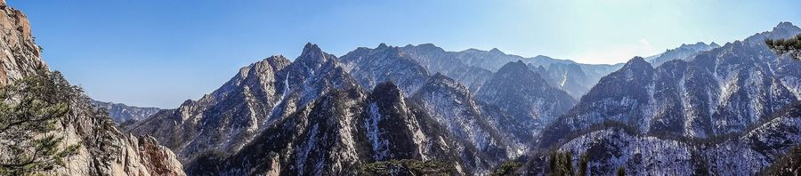
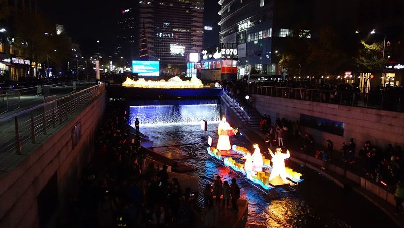
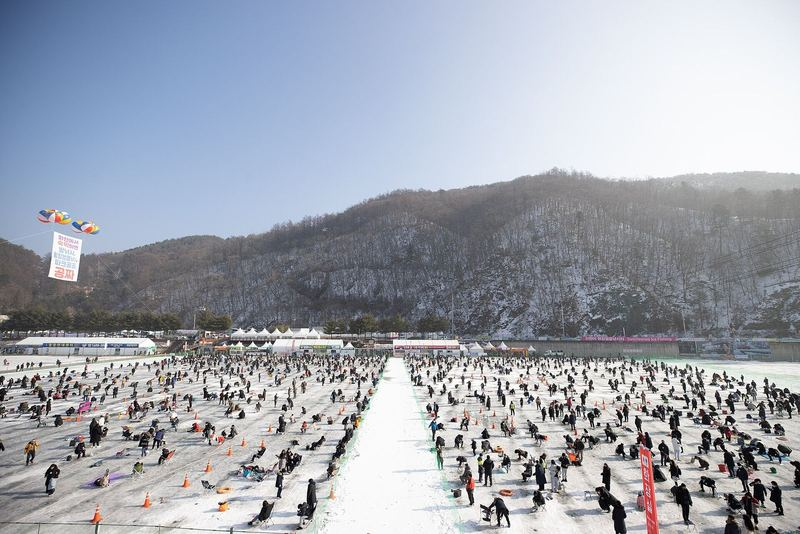
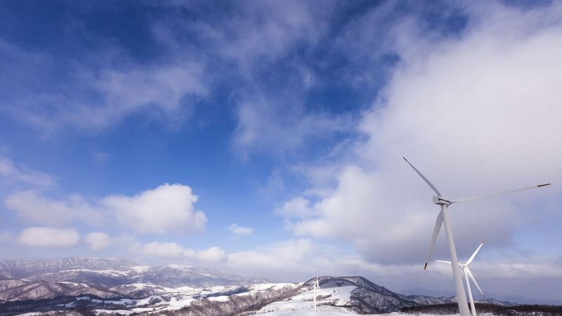
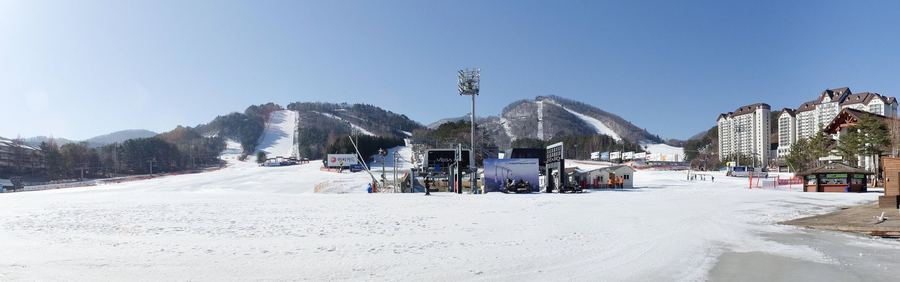
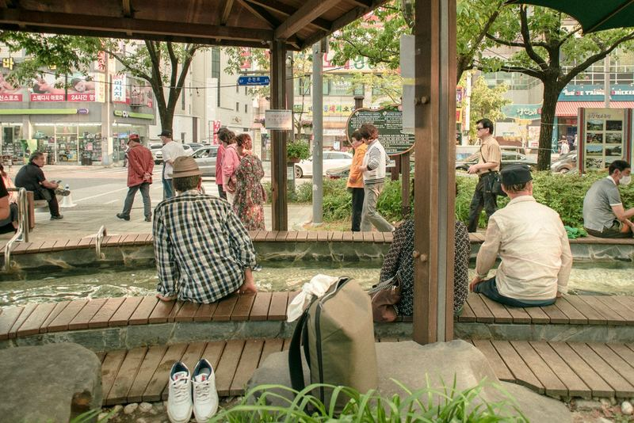
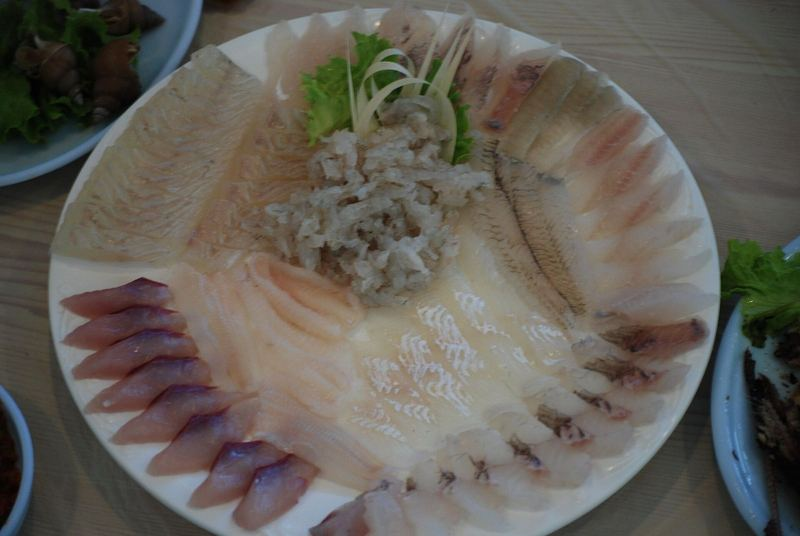
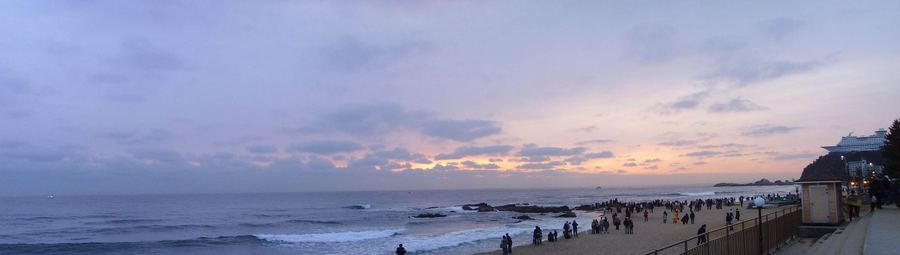

Seoraksan. Photo: Sohyeon Bak, CC BY-SA 3.087days
of Korean winter, and what to do with them
Dec 4 to Feb 28. Seven stories, about two minutes.
Swipe up to startStart
Cheonggyecheon. Photo: Ken Eckert, CC BY-SA 4.0From mid-December, Seoul
Winter in Seoul doubled in a single year
10.98Mvisitors to Seoul Winter Festa, twice the year before
SoGo on a December weekday evening, walking from Gwanghwamun to Cheonggyecheon.

Hwacheon. Photo: Korea.net, CC BY-SA 2.0Mid-January to early February
Ice festivals now open only when the weather allows
1.86Mrecord crowd at Hwacheon, 2025
SoGo after the third week of January, and check the opening notice the day before.

Daegwallyeong. Photo: Yong Lee, CC BY 3.0January, the coldest month
Same January, 16 degrees apart
16°Cbetween Daegwallyeong (−12.2°) and Jeju (3.7°) at night
SoFor snow, go to Daegwallyeong. For walks by the sea, Gangneung or Jeju.

Yongpyong. Photo: Kalatpadai, CC0From late November
Skiers are coming back, to fewer resorts
4.43Mski visits in 2023/24, up from 1.46M during COVID-19
SoBig resorts open late Nov to early Dec. Buy a season pass before the opening is announced.

Yuseong, Daejeon. Photo: Pmlydon, CC BY-SA 4.0On the coldest days
When it turns bitter, Koreans head to hot springs
+246%hot spring searches in January 2026, year on year
SoIf a cold snap hits your ice-festival day, switch to a nearby hot spring.

Raw fish. Photo: suksim, CC BY 2.0November to March, by the sea
Eat these three while they are in season
- Oysters gulDecemberTongyeong
- Gwamegi dried herringDecemberGuryongpo, Pohang
- Yellowtail bangeoJanuaryJeju, Busan, Goseong
SoYellowtail prices rose 156% in a year. Check the price first.

Jeongdongjin. Photo: Loewelad, CC BY-SA 3.0The morning of January 1
The first sunrise of the year is on the East Sea
300Kpeople watched it in Gangneung on Jan 1, 2026
SoFor a quieter sunrise, pick Anmok over Gyeongpo, or Seongsan on Jeju.
Your winter, in order
Four stops from December to February
- Mid-December
Seoul's winter lights on a weekday evening, then oysters and gwamegi.
- Dec 31 to Jan 1
The midnight bell at Bosingak, or the first sunrise at Anmok.
- Mid-Jan to early Feb
An ice-fishing festival. On the coldest day, a hot spring instead.
- February
Daegwallyeong Snow Festival, the last ski weeks, strawberries.
Sources and photos
Where the numbers come from
Figures come from public agencies and Korean press reports; festival attendance figures are all organizer counts. 2027 regional festival dates and ski resort openings may change as they are announced. Most sources below are in Korean.
- KMA new climate normals (1991–2020)
- Daegwallyeong climate (citing KMA)
- Seoul Winter Festa 2025 results (Seoul)
- Seoul Winter Festa 2026–27 (Seoul festival portal)
- Gwanghwamun Market and Lantern Festival visitors (Herald Economy)
- Hwacheon Sancheoneo Ice Festival 2025 (Kyunghyang)
- Hwacheon Sancheoneo Ice Festival 2023–24 (Herald Economy)
- Hwacheon Sancheoneo Ice Festival 2026 (News1)
- Inje Smelt Festival called off (Herald Economy)
- Andong Amsan Ice Festival cancelled (Herald Economy)
- Pyeongchang Trout Festival postponed (Twig)
- Ski visits 2011/12, 2020/21 (Bizhankook)
- Ski visits 2018/19–2023/24 (Economy Chosun)
- Number of ski resorts (SBS)
- Yongpyong opening target (Segye Ilbo)
- January destination search growth (Korea Economic Daily)
- Hot spring visits nationwide (News1)
- Gangwon yellowtail catch (Kangwon Ilbo)
- Pohang gwamegi output (Kyongbuk Ilbo)
- Beolgyo cockle output (Betanews)
- Tongyeong oyster first auction (Gyeongnam Domin Ilbo)
- Yellowtail wholesale price (Financial News)
- Gangneung sunrise crowds (Kangwon Ilbo)
- Sunrise times, January 1, 2026 (Newsis)
- Daegwallyeong Snow Festival 2026 (Kangwon Ilbo)
All photos are freely licensed images from Wikimedia Commons, cropped to fit the page. If you adapt and redistribute a CC BY-SA photo, the same licence applies. A photo's place and season may differ from the text next to it (the lantern photo, for example, was taken at the November festival).
- Seoraksan in winter, Sohyeon Bak, CC BY-SA 3.0
- Seoul Lantern Festival, Cheonggyecheon, Ken Eckert, CC BY-SA 4.0
- Hwacheon Sancheoneo Ice Festival, Republic of Korea (Korea.net), CC BY-SA 2.0
- Samyang Ranch, Daegwallyeong, Yong Lee, CC BY 3.0
- Yongpyong Resort slopes, Kalatpadai, CC0
- Yuseong hot spring foot bath, Pmlydon, CC BY-SA 4.0
- Raw fish (saengseon hoe), suksim, CC BY 2.0
- Jeongdongjin Beach, Loewelad, CC BY-SA 3.0